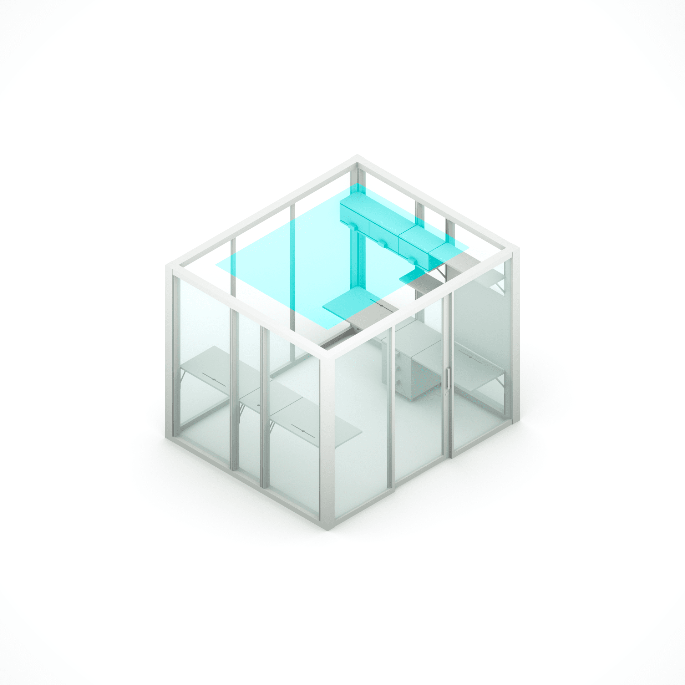
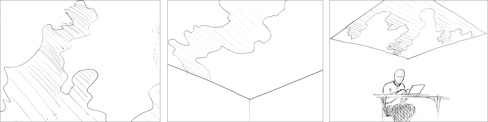
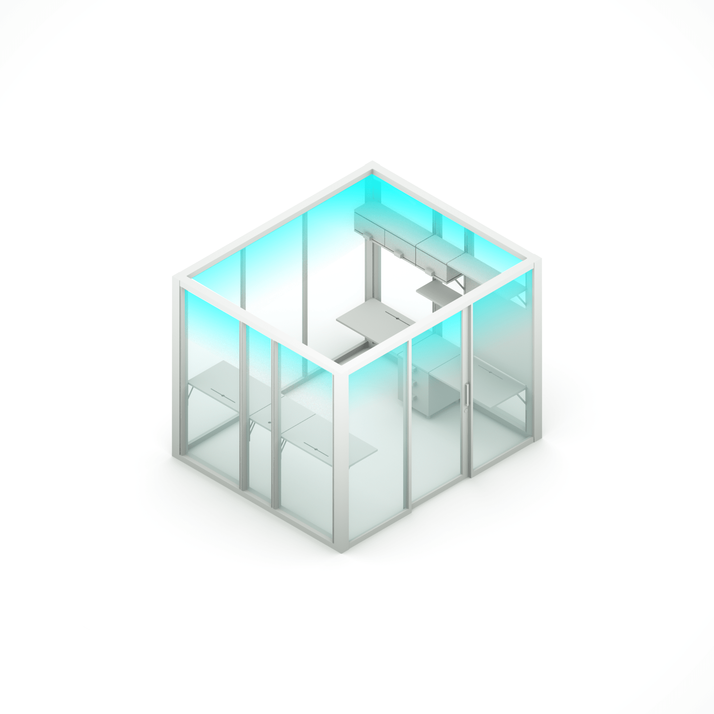
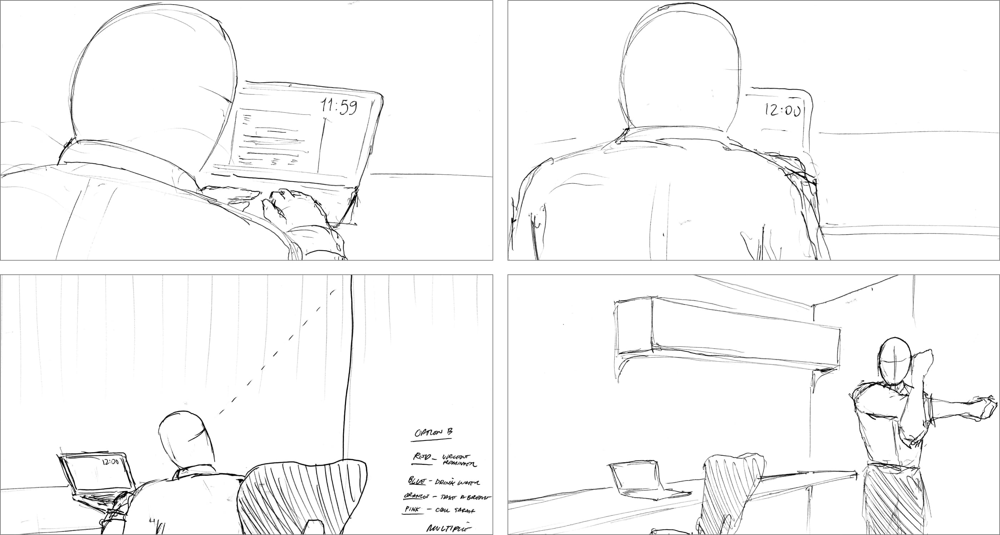
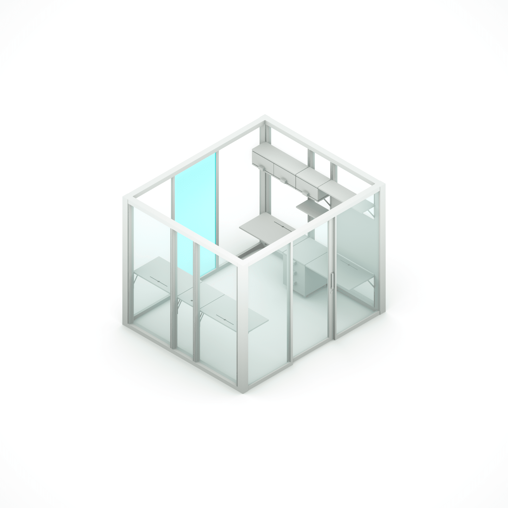
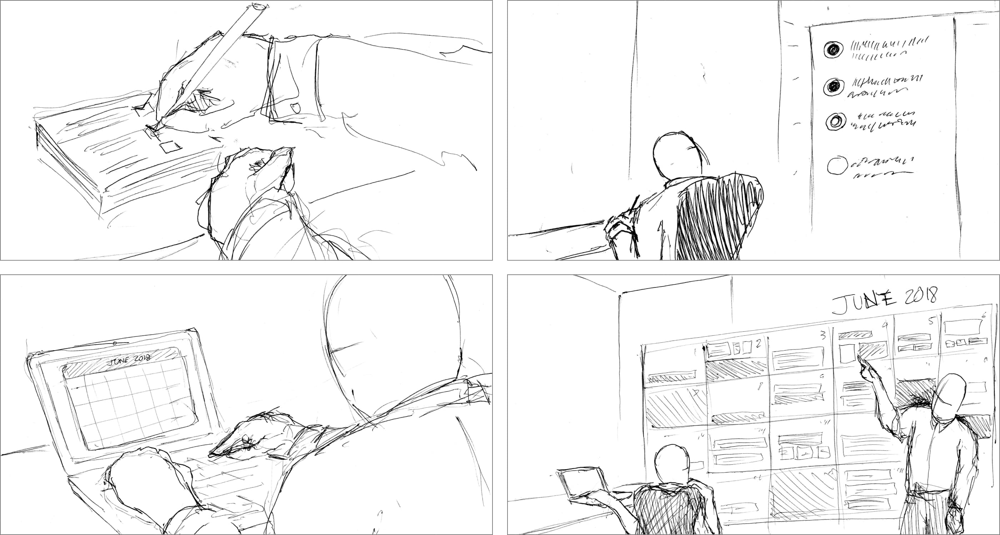
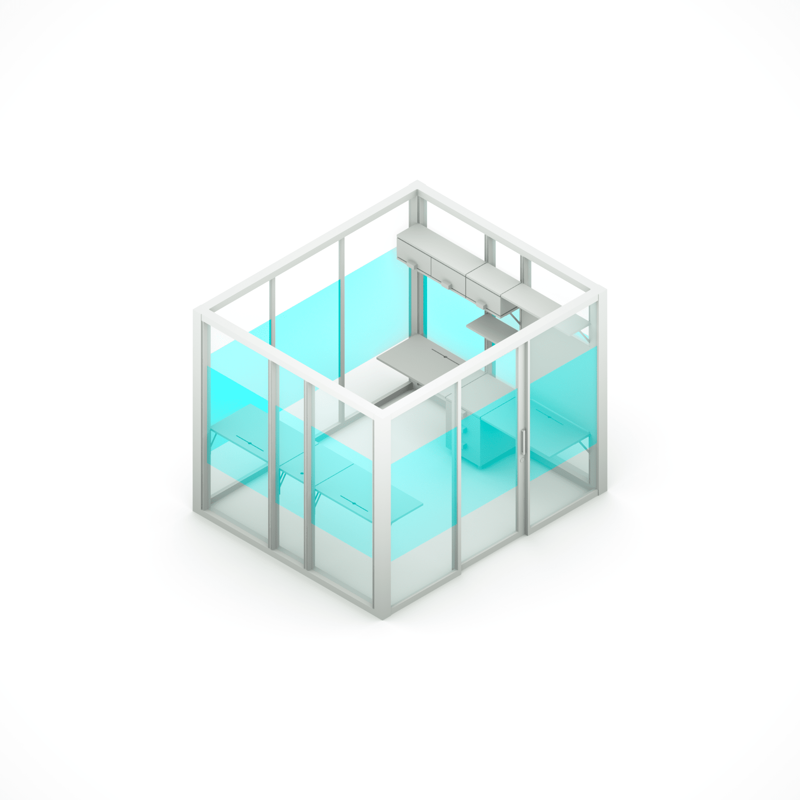
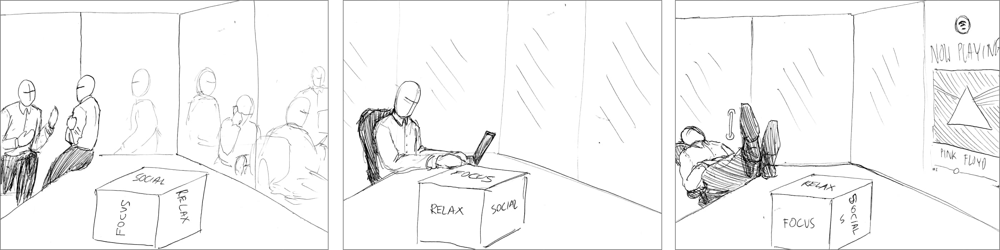

One of my first projects at Hush involved concepting and prototyping possible smart-interiors for WeWork's future modular office spaces. Hush looked to express WeWork's motto of "Make a life, not just a living" in its new spaces through various architectural and interactive interventions.
My role in this project consisted of conducting research, creating user journeys, storyboards, and creating interface animations for a final animatic prototype.

Open Skies
In this concept, we outline three key motivators for a better indoor lighting system:
Individual lighting control is a critical factor in worker productivity. Studies have shown that when users can adjust the illuminance that it has a positive effect on their satisfaction with the environmental conditions. Source
It actively reduces mental fatigue. The presence of natural lighting elements performs a restorative function, reducing mental fatigue and increasing concentration and job satisfaction. Source
Light perception is thought to be a critical influence in maintaining circadian rhythm, which regulates such factors as cognitive performance, mood, and well-being. Source

WeWork's Open Skies is a mutable digital ceiling that addresses the passage of time and the need to visually connect with the sky over the course of the day. Individuals interface with this ceiling through a mobile interface that gives them immediate control. The colors provided are geared towards productivity and balancing circadian rhythms.

Gentle Reminders
For this concept, we detail three motivators for an environmental notification system:
Notifications are distracting. There is evidence that constant device notifications can lead to symptoms adult ADHD. Studies have shown that turning off notifications can cause anxiety.
Source
Reminders can build good habits. Setting up a visible reminder and linking my new habit with a current behavior makes it much easier to change. Success in this system does not hinge upon motivation or memory. It doesn’t matter if it’s working out or eating healthy or creating art, you can’t expect yourself to magically stick to a new habit without setting up a system that makes it easier to start. Source
Create awareness not disruption. A recent study conducted at the University of California, Irvine indicated that most people take 23 minutes and 15 seconds to recover from an interruption. That’s actually a pretty long time, and it can really add up over the course of a day. Source

WeWork's Gentle Reminders works to keep you aware of your goals and build great habits without disrupting your valuable concentration. Addressable architectural accent lights pulse to deliver important reminders throughout the day.
GR software uses an existing calendar API and the users own data to drive the lights. A mobile and desktop interface allows direct user engagement through their personal calendar.

Collaboration Board
Here are three reasons for installing human-scaled digital work surfaces:
People are limited by the size of their interfaces. Interfaces that are responsive to the human scale open up new opportunities for how we explore and visualize ideas.
Source
Larger work surfaces invite deeper collaboration.
While smaller displays suit individual productivity, it is important that the tools for collaborative work reflect multi-user needs. Source
Offices around the world use many of the same tools. The ubiquity of analog office tools allows easy information sharing, project coordination, and effective ideation — regardless of geography.

The WeWork Collaboration Board is an interface that offers a new perspective on office workflow by encouraging new ways of thinking and collaborating at the human scale.

Modes
Why flexible, adaptable office spaces are a must:
Control of your environment allows for greater well-being. Having the ability to choose a desired work environment is critical to productivity, and the ability to further customize work conditions improves worker well-being.
Source
Sound can make or break a space. Conversational speech is the most distracting noise in open-offices, and once focus is broken, it can take 10+ minutes to return concentration.
Source
Privacy vs. publicity is a delicate balance. While open office environments facilitate social interaction and ease of communication, privacy is an important part of productivity.
Source

Wework technology provides more humane and more efficient workspace allowing occupants to quickly change their environment. A simple interface lets you change the following all at once: the transparency of partitions through addressable electrochromic glass, ceiling and accent lighting, sound within the space, and content on the Community Board.
Takeaways
WeWork came to us to create multiple spatial concepts for their product, the office space. The process of concepting and prototyping this project was fast paced, iterative, and felt like multiple design sprints.
What we created for WeWork was intended to be a conversation starter for internal stakeholders. These prototypes were made with a desire to aid the well-being, productivity, and sense of community for the office workers of the near future.